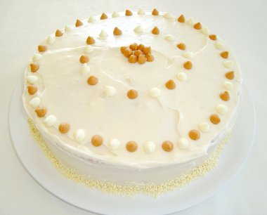

Butterscotch Cake Recipe
Here's the recipe for the preparation of a butterscotch cake with butter frosting. This recipe prepares the cake for 5 servings.
Ingredients
For Cake:
- 2 cups cake flour sifted for butter scotch cake
- 3 teaspoons baking powder
- 2 medium eggs
- 1 ½ cup brown sugar, packed
- ½ cup butter or margarine, softened
- 1 teaspoon vanilla extract
- 1 cup milk
For Butter Frosting:
- ¼ cup butter or margarine
- 2 cups powdered sugar
- ½ teaspoon vanilla extract
- 2 tablespoons cream
- 1 tablespoon hot water
Method of Preparation
- Sift together flour, baking powder and salt. Add brown sugar, butter (or margarine), vanilla and ⅔ cup milk. Beat for 2 minutes at medium speed and then add rest of milk and the eggs. Beat 2 minutes more.
- Pour into two 8-inch greased and floured cake pans. Bake in preheated 350° oven for 25-30 minutes. Frost with butter frosting.
- For Frosting: Brown butter over low heat, watching carefully. Add rest of ingredients and stir until cool and of consistency to spread.